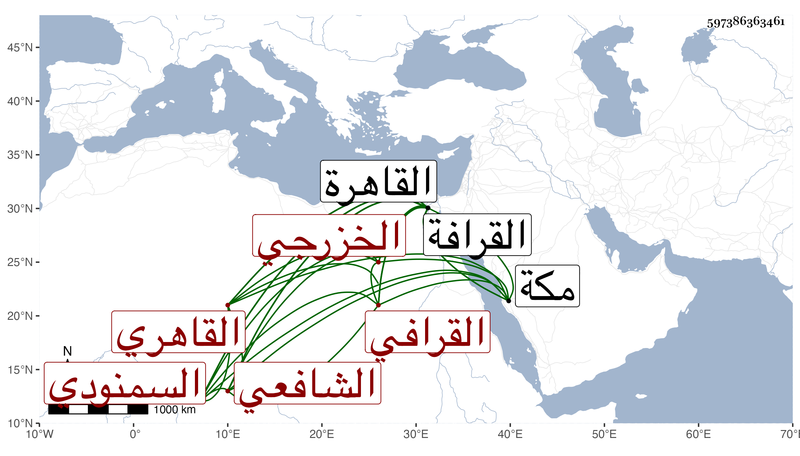

0902Sakhawi.DawLamic.ITO20230111-ara1.EIS1600.597386363461
Biography ID: 597386363461
667
عبد الغني بن محمد بن محمد بن محمد بن علي الزين والتقي أبو عبد القادر وأبو محمد الخزرجي السمنودي الأصل القاهري القرافي الشافعي عم شيخ القراء التاج محمد بن أبي بكر الآتي ويعرف بابن تمرية وربما شهر في القرافة بابن الاقباعي باسم صاحب التربة محل اقامته . ولد في أواخر سنة تسع وسبعين وسبعمائة بالقاهرة ونشأ بها فحفظ القرآن وأخذ القراءات رفيقا لابن أخيه التاج عمر الفخر البلبيسي الامام والغرس خليل بن المشيب والنور بن الناصح وآخرين واشتغل في المنهاج وغيره ، وحج صحبة أخيه مجاورا وسمعا بمكة على العفيف النشاوري صحيح البخاري وحضر الختم الجمال أبو إسحق إبراهيم الأميوطي وأجاز وسمع بعد بالقاهرة على التنوخي المنهاج وغيره ، وحدث سمع منه الفضلاء سمعت عليه بل أخذ عنه بعض القراء القراءات مع كونه تاركا للفن وكان خيرا منعزلا عن الناس . مات في صفر سنة سبع وخمسين رحمه الله وإيانا .
